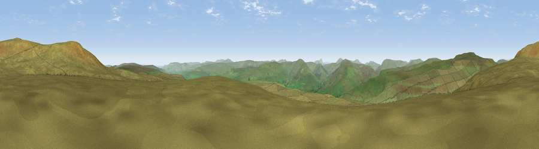

Viewpoint near Appersett
#7769 in England · top 17% of its area beats it · near AppersettThe view, rendered

A 360° render of this exact spot computed from the terrain model, tree cover and land cover — summer colours, afternoon light, calibrated against photographs of famous viewpoints. Real trees, hedges and buildings will differ in detail.
The panorama
Grey silhouette: terrain skyline in each direction (720 bearings, Earth curvature and refraction included). Dashed green: skyline with trees (+15 m) and buildings (+8 m) as obstacles. Blue strip: how far the ground is visible on each bearing.
Where the view opens
Wedge length = distance to the farthest visible ground on that bearing (vegetation-aware). Rings at 10, 25 and 50 km.
What fills the view
99% grassland ·
Angular shares of the visible panorama (visual magnitude), not map area. Landscape diversity 0.02 (0–1 Shannon).
Key numbers
More beautiful places nearby
The staircase of upgrades: each row has a higher view potential than everything closer. Driving times are estimates from straight-line distance, calibrated against real road routing — check an actual route before setting out.
| Place | Direction | Drive | Score |
|---|---|---|---|
| Viewpoint near Cotterdale | NNE · 1 km | ~2 min | 74.4 |
| Viewpoint c10024_7603 | NW · 10 km | ~20 min | 76.9 |
| Viewpoint near Buckden | SSE · 18 km | ~31 min | 77.3 |
| Whernside | SW · 19 km | ~32 min | 79.9 |
| Warton Crag | WSW · 44 km | ~64 min | 83.2 |
| Viewpoint near Finsthwaite | W · 49 km | ~70 min | 84.7 |
| Viewpoint near Finsthwaite | W · 49 km | ~70 min | 90.3 |
| The Knoll | S · 408 km | ~388 min | 91.0 |
54.34522, -2.18956 · source: screening · position refined by local search. Computed location — check access rights before visiting.